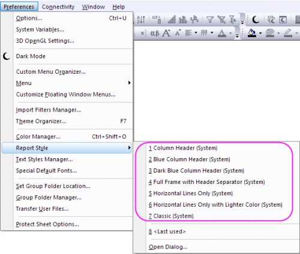
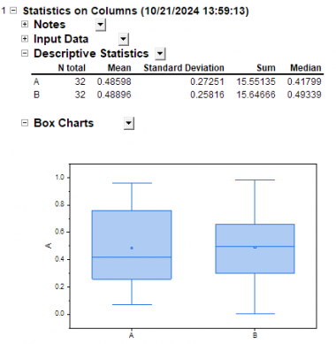
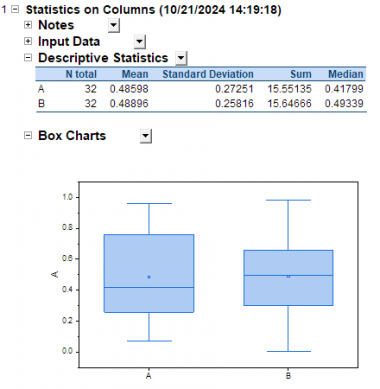
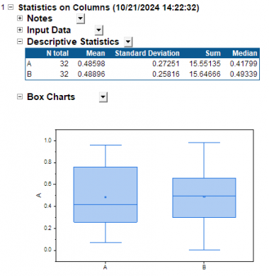
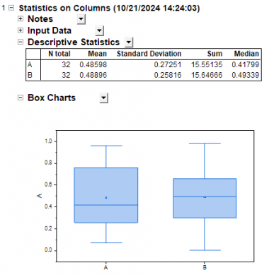
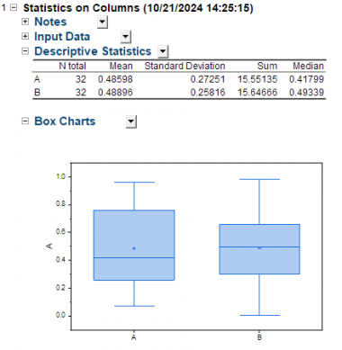
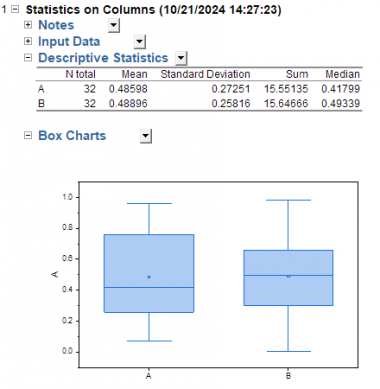
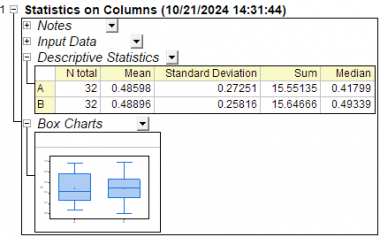

Der Dialog Berichtsstil bietet die Bedienoberfläche, um Origins Stil für die Tabelle des Berichtsblatts zu steuern.
Sie können die Vorschau verwenden, um die benutzerdefinierte Einstellung zu prüfen.
Wenn Sie auf OK klicken, um den neuen Stil zu speichern. Er wird als Standardstil des Berichtsblatts festgelegt. Das neue Berichtsblatt folgt dem neuen Stil. Sie können neu berechnen, um den Stil des vorhandenen Berichtsblatts auf den neuen zu aktualisieren.
Origin bietet mehrere Systemdesigns für den Berichtsstil. Sie können im Hauptmenü Einstellungen: Berichtsstil: [Designname] direkt wählen, um das Design des Berichtsblattstils zu ändern. 
| Spaltenheader | Blauer Spaltenheader |
|---|---|
 |
 |
| Dunkelblauer Spaltenheader | Voller Rahmen mit Headertrennzeichen |
 |
 |
| Nur horizontale Linien | Nur horizontale Linien mit hellerer Farbe |
 |
 |
| Klassisch | |
 |